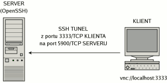
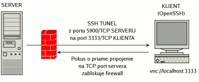

Vzdialene, graficky a šifrovane
Po náročnom dni odchádzate z práce a na firemnom počítači beží v grafickom prostredí program, ktorý bude za pár hodín potrebovať váš zásah. Môžete sa k nemu vrátiť na druhý deň, môžete ostať v práci dlhšie, alebo môžete firemný počítač ovládať pohodlne z domu. Ovládať vzdialene grafické prostredie nie je v linuxe žiadny problém. Slúži na to napríklad systém pre vzdialenú správu VNC, ktorý sa dá jednoducho zabezpečiť vytvorením šifrovaného SSH tunelu.
1. Tunelovacie schopnosti protokolu SSH
Ako jednu zo zásadných vlastností OpenSSH uvádzajú jeho autori možnosť vytvárať šifrované tunely. Tunelovanie alebo tiež “port forwarding” sa využíva najmä na “obaľovanie” aplikačných protokolov rodiny TCP, ktoré prenášajú dáta nešifrované. Výrazne sa tak zvyšuje ich bezpečnosť a odolnosť voči odpočúvaniu.
Port forwarding môžeme rozdeliť na:
- remote port forwarding - naviazanie vzdialeného portu na lokálny;
- local port forwarding - naviazanie lokálneho portu na vzdialený.
2. Local port forwarding
Často sa používa práve na už spomínané obaľovanie aplikačných protokolov šifrovaným spojením. Predpokladajme, že sa chceme pripojiť z domácej pracovnej stanice (KLIENT) prostredníctvom protokolu VNC na firemný unixový server (SERVER), na ktorom beží okrem VNC démona aj SSH démon z balíka OpenSSH. Pripojíme sa teda na server pomocou SSH klienta s nastaveným naviazaním nášho lokálneho portu 3333/TCP na vzdialený port 5900/TCP servera, čím vznikne šifrovaný tunel. Pomocou VNC klienta sa následne už nepripájame na server, ale na port 3333/TCP localhostu a spojenie je automaticky smerované na port 5900/TCP serveru.

user@klient$ ssh -L 3333:127.0.0.1:5900 user@server
Rozdiel oproti priamemu pripojeniu VNC klienta na port 5900/TCP servera je v tom, že všetky informácie pre VNC server sú prenášané v šifrovanom spojení, tzv. SSH tuneli.
3. VNC démon
Ako VNC démon sa mi zatiaľ najviac osvedčil x11vnc, ktorý je schopný vzdialenému klientovi sprístupniť reálny displej x-servera. Po jeho skompilovaní je treba najskôr vytvoriť prístupové heslo, ktoré bude VNC démon vyžadovať od klienta.
user@server$ x11vnc -storepasswd vaseheslo ~/.vncpasswd
Keďže je toto heslo uložené v súbore ~/.vncpasswd, je nutné mu nastaviť správne prístupové práva, aby ho nemohol čítať nikto iný, než vlastník.
user@server$ chmod 600 ~/.vncpasswd
Na samotné spustenie VNC démona potom už stačí iba použiť príkaz:
user@server$ x11vnc -display :0 -localhost -rfbauth ~/.vncpasswd -forever -bg
Paramater -display :0 určuje, ktorý displej grafického servera má VNC démon sprístupniť klientom.
Parameter -localhost zabezpečí, že VNC démon bude očakávať prichádzajúce spojenia iba na rozhraní localhostu, a teda bez vytvoreného SSH tunelu sa na neho nepripojíte.
Vyžiadanie hesla pri pokuse o pripojenie zabezpečuje parameter -rfbauth ~/.vncpasswd.
Parameter -forever zas zaistí, že VNC démon neukončí svoju činnosť po vybavení prvého spojenia, ako to bez tohoto parametra bežne robí.
No a vďaka parametru -bg sa x11vnc po naviazaní na displej :0 presunie do pozadia.
4. Remote port forwarding
Situácia sa mierne komplikuje, ak sa firemný server nachádza v sieti chránenej firewallom, ktorý nám bráni nadviazať priame spojenie na akýkoľvek TCP port tohto servera. Vtedy je nutné vytvoriť SSH tunel opačným smerom. Zo serveru sa teda pripojíme na SSH démon bežiaci na klientskej stanici s nastaveným naviazaním vzdialeného portu 3333/TCP na lokálny port 5900/TCP servera, čím sa vytvorí identický šifrovaný tunel ako v prípade local port forwardingu. Z domácej klientskej stanice sa potom pomocou VNC klienta pripájame podobne ako v prvom prípade, na port 3333/TCP localhostu a spojenie je automaticky smerované na port 5900/TCP serveru.

user@server$ ssh -R 3333:127.0.0.1:5900 user@klient
Záver
K používaniu vzdialenej správy grafického prostredia je treba pristupovať s veľkou opatrnosťou. Takéto spojenie by nikdy nemalo prebiehať nešifrované, a preto je nanajvýš vhodné využiť tunelovacie schopnosti protokolu SSH. Navyše šifrované SSH tunely odstraňujú bariéry vytvárané sieťovými firewallmi. Pri vhodnej kombinácii local a remote port forwardingu je za prítomnosti z oboch sietí dostupného SSH servera, možné spojiť aj počítače, ktoré sa oba nachádzajú v chránených sieťach.